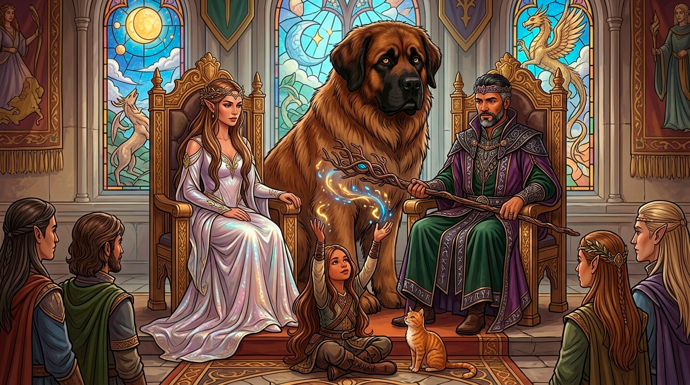

 Vede Flechaleve
Vede Flechaleve
Atual Rei de Phantasia, Vede Flechaleve é um humano cuja presença combina autoridade natural com uma mente afiada e inquieta. Herdeiro de uma linhagem marcada por liderança e desafios constantes, Vede não se destacou apenas por direito de sangue, mas por mérito próprio. Desde jovem demonstrou uma inteligência incomum, aliada a uma curiosidade insaciável, especialmente no que diz respeito às artes arcanas. Com o tempo, tornou-se não apenas um governante capaz, mas também um dos mais notáveis feiticeiros de todo o Reinado.
Nos bastidores, há rumores de que o rei se envolve diretamente em estudos e projetos que poucos compreendem completamente. Vede Flechaleve II não é apenas um rei que governa seu tempo, é alguém que parece se preparar para o que ainda está por vir.
 Jak’Ln Fäye
Jak’Ln Fäye
Rainha de Phantasia, Jak’Ln é uma elfa cuja presença é tão cativante quanto estratégica. Dotada de uma beleza marcante e de um carisma quase sobrenatural, ela domina a arte da diplomacia com naturalidade impressionante. Em salões políticos, encontros formais ou conversas casuais, sua habilidade de conduzir diálogos e influenciar decisões faz com que poucos sequer percebam quando já foram convencidos. Ela é o coração social do Reinado.
Por trás de sua aparência graciosa, no entanto, existe uma mente extremamente calculista e atenta. Jak’Ln compreende pessoas com profundidade, identificando motivações, medos e desejos de forma inquietante. Sua influência se estende por cortes e conselhos, tornando-a uma peça essencial na manutenção do equilíbrio político do reino.
 Yasmin Fäye Flechaleve
Yasmin Fäye Flechaleve
Princesa de Phantasia, Yasmin Fäye Flechaleve carrega em si o peso e o potencial de uma linhagem extraordinária. Filha do rei Vede Flechaleve e da rainha Jak’Ln Fäye, e descendente direta de Marco I, ela representa a união entre diferentes tradições do Reinado: a liderança humana, a sutileza élfica e a herança histórica que moldou Phantasia. Ainda jovem, Yasmin já se destacou como uma poderosa druida, profundamente conectada à natureza e às forças primordiais do mundo. Sua magia é viva, instintiva e, muitas vezes, imprevisível — mais próxima do fluxo natural da vida do que das estruturas rígidas da magia arcana.
Yasmin é frequentemente vista longe dos salões reais, explorando florestas, campos e regiões selvagens do reino. Ao seu lado estão seus companheiros inseparáveis: Fun, uma cadela gigante de lealdade inabalável; Tigra, uma gata mágica de comportamento enigmático e inteligência aguçada; e Gwen, um raro e majestoso unicórnio, cuja presença por si só já é considerada um presságio de algo maior. Juntos, formam um vínculo que vai além da simples companhia, refletindo a profunda conexão da princesa com todas as formas de vida.
 Louis Felipus Panzutus
Louis Felipus Panzutus
Ex-campeão do coliseu da Cidade das Sandálias, Louis Felipus construiu sua reputação tanto com a força bruta quanto com uma presença de palco inigualável. Meio-orc de porte imponente, ele conquistou multidões com suas vitórias e pelo espetáculo que criava a cada combate, sempre teatral, provocador e surpreendente. Após se aposentar invicto, assumiu a organização dos jogos, transformando-os em eventos ainda mais grandiosos, onde estratégia, entretenimento e política se misturam sob sua supervisão.
Extremamente carismático e dono de uma lábia afiada, ele transita com facilidade entre diferentes culturas e classes sociais, dominando inúmeros idiomas e adaptando-se a qualquer ambiente. Muitos o veem como um mestre da negociação disfarçado de showman. Seja lidando com lutadores, nobres ou figuras duvidosas, Louis mantém sua posição no centro de tudo, onde o espetáculo acontece e as verdadeiras apostas são feitas.
 Joan’o Rafaelus Panzutus
Joan’o Rafaelus Panzutus
Prefeito do Povoado Heroico, Joan’o Rafaelus é um meio-orc que contrasta com o irmão em quase tudo, exceto no carisma. Enquanto Louis domina arenas, Joan’o conquistou corações com sua arte. Bardo de certa fama pelo reino, ele se tornou conhecido por uma habilidade rara e mágica: seus desenhos ganham vida. Criaturas esboçadas em pergaminhos podem se mover, interagir e até auxiliar em pequenas tarefas, como se fossem extensões da própria imaginação do artista. Essa dádiva fez de Joan’o uma figura querida e, ao mesmo tempo, intrigante.
Como prefeito, ele governa de maneira pouco convencional, usando sua arte e sensibilidade para resolver conflitos e inspirar a população. O Povoado Heroico, sob sua liderança, tornou-se um lugar vibrante, onde histórias são celebradas e onde aventureiros encontram não apenas descanso, mas também propósito. Ainda assim, há quem questione os limites de seu poder: e o que acontece quando uma obra ganha vida, mas decide não obedecer a seu criador?
 Carólin Imogen
Carólin Imogen
Representante dos elfos no Reino dos Sábios, Carólin é uma figura que parece transcender os próprios padrões de beleza e elegância de seu povo, sendo amplamente considerada a mais bela entre eles não apenas por sua aparência, mas pela harmonia de sua presença, voz e postura.
Sua atuação política é marcada por uma serenidade firme e uma inteligência sutil, capaz de influenciar decisões com poucas palavras, sempre escolhidas com precisão quase poética. Carólin carrega consigo o peso de representar uma das culturas mais antigas de Phantasia, e o faz com graça e autoridade, sendo ao mesmo tempo admirada, respeitada e, por vezes, subestimada por aqueles que confundem sua delicadeza com fragilidade.
E a verdade não poderia ser mais diferente disso: no fundo, e nas sombras, Carólin é uma das jogadoras mais frias e cruéis no jogo político de Phantasia.
 Túrin Pedrazul
Túrin Pedrazul
Representante dos anões no Reino dos Sábios, o jovem Túrin Pedrazul é a personificação viva da resistência e da tradição de seu povo, conhecido por sua teimosia lendária e uma determinação inabalável que poucos conseguem contestar. De fala direta e sem rodeios, ele raramente cede em debates, defendendo os interesses anões com a mesma firmeza com que uma montanha enfrenta as tempestades.
Apesar de sua rigidez, Túrin é profundamente respeitado, pois por trás de sua postura inflexível há um senso de honra e lealdade sólidos e uma sabedoria prática forjada ao longo de anos de experiência, tornando-o uma voz difícil de ignorar e ainda mais difícil de dobrar.
Viciado em maçãs, dificilmente não estará com uma nas mãos.
 Alura Bastiel
Alura Bastiel
Representante dos humanos no Reino dos Sábios, Alura é conhecida por sua mente rápida e língua afiada, capaz de transformar qualquer debate em um jogo de estratégia onde raramente sai em desvantagem. Vivaz, perspicaz e sempre atenta, ela lê situações e pessoas com precisão quase cirúrgica, explorando brechas e oportunidades com a elegância de quem domina tanto a política quanto a retórica.
Sua presença é marcante e, por vezes, intimidadora, pois Alura não hesita em confrontar ideias ou desafiar figuras de autoridade quando acredita estar certa, tornando-se uma das vozes mais influentes e imprevisíveis entre os representantes do Reino dos Sábios.
> Não vai a lugar nenhum sem seu rato de estimação, Pierre.
 Elisa Confete
Elisa Confete
Representante dos hobbits no Reino dos Sábios, Elisa é frequentemente subestimada à primeira vista, mas provou ser uma das mentes mais sagazes e observadoras entre os líderes do Reinado. Com uma postura leve, sorriso constante e uma habilidade natural para criar conexões, ela prefere influenciar pelos detalhes, palavras bem colocadas e uma leitura apurada do ambiente. Elisa valoriza equilíbrio, bem-estar e soluções práticas, trazendo uma perspectiva única às discussões mais complexas.
Por trás de sua aparência acolhedora, existe uma estrategista discreta, que entende que, muitas vezes, são os movimentos mais sutis que realmente moldam o rumo das decisões.
Quando perguntam sobre sua cicatriz no pescoço, ela apenas sorri e diz que é uma lembrança de alguém querido.
 Isis Vagalume
Isis Vagalume
Representante das fadas no Reino dos Sábios, Isis é uma presença enigmática, mas sábia. Ágil de pensamento e delicada em palavras, ela é capaz de transmitir ideias complexas com a leveza de um sussurro, conquistando respeito sem precisar levantar a voz. Isis atua como ponte entre a existência idílica das fadas e as realidades políticas de Phantasia, trazendo uma visão voltada para harmonia, equilíbrio e preservação, mas sempre atenta às sutilezas que podem alterar o destino do reino.
Seu olhar perspicaz e comportamento quase imaterial escondem uma mente estratégica, capaz de antecipar movimentos de aliados e adversários com uma precisão que poucos conseguem compreender. Tal qual a própria magia crua, fadas podem ser imprevisíveis.
 Dr. Julian Bolovo
Dr. Julian Bolovo
Representante dos goblins no Reino dos Sábios, Julian é uma figura inesperadamente respeitável e sofisticada, que desafia os estereótipos associados ao seu povo. Conhecido por sua inteligência aguçada e domínio de diversas áreas do conhecimento - principalmente mecânica -, ele combina perspicácia científica com astúcia política, transformando debates complexos em oportunidades para avanços tecnológicos. Ele é meticuloso, detalhista e raramente subestima seus interlocutores, conseguindo fazer com que até os mais preconceituosos reconheçam a voz e o peso dos goblins nas decisões do Reinado.
Apesar de sua postura racional e controlada, há uma energia inquieta nele, típica de sua espécie, que o torna imprevisível e fascinante, sempre pronto a apresentar soluções criativas para problemas que outros considerariam insolúveis.
 Safira, a Raivosa
Safira, a Raivosa
Representante dos orcs no Reino dos Sábios, Safira Tol’um Kah, conhecida pelo apelido “a Raivosa”, é uma presença intensa e inconfundível em qualquer reunião ou conselho. Sua força de vontade é tão lendária quanto sua fúria controlada, e ela não hesita em falar com franqueza, impondo respeito imediato mesmo aos mais experientes diplomatas.
Por trás da aparência agressiva, Safira é perspicaz, capaz de transformar sua paixão e intensidade em argumentos convincentes e decisões impactantes. Sua voz ressoa não apenas pelo poder de sua raça, mas também pelo conhecimento profundo das tradições orcs e pela lealdade inabalável ao bem-estar de seu povo, tornando-a uma aliada valiosa e uma adversária a ser temida.
Safira é, na verdade, uma meia-orc, mas se você disser isso para na frente dela você vai ser um meio-morto. Ela se considera e se vê como orc pura - apesar de ter os belos traços de seu pai elfo.